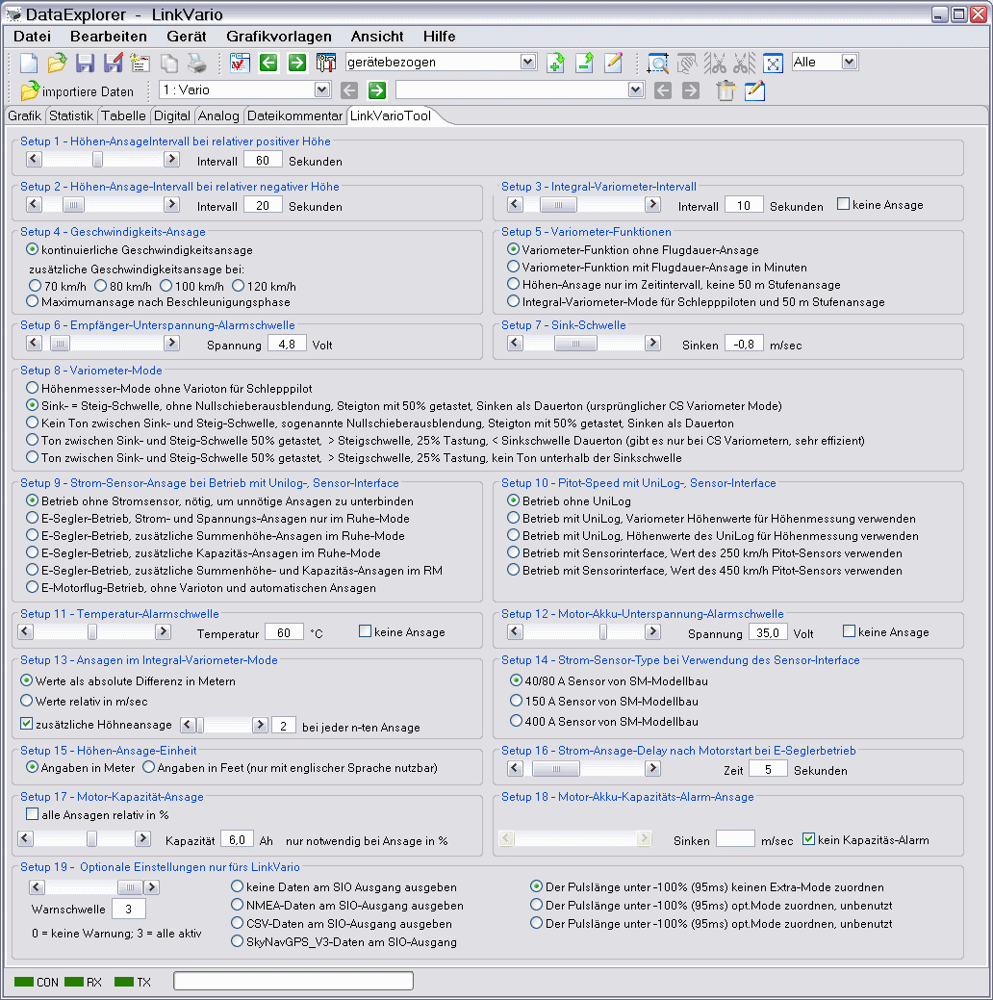

Der gezeigte Gerätedialog dient zur Konfiguration der Anzeige der ausgelesenen Daten. Über einen Dateiauswahldialog, erreichbar über "öffne Datei", können auch neue Dateien Eingelesen werden.
Hinweis: Ist die Anzeige erst einmal konfiguriert, wird diese Anzeigekonfiguration auch angewendet, wenn über die Kanal/Konfigurations- Auswahl in der Toolbar eine Konfiguration gewählt und dann über "importiere Datei" in der Toolsleiste der Dateidialog geöffnet und eine Datei eingelesen wird.
Über das Dateimenü -> Export können GPS basierte Daten, soweit vorhanden, in dem Google Earth KML Datenformat, sowie dem "global positioning system" (GPS) Austauschformat GPX, exportiert werden. Beide Datenformate lassen sich in der Google Earth Anwendung öffnen und betrachten. Da in der Google Earth Anwendung keine Höheninformation dargestellt wird der Export immer mit relative Höhe empfohlen. Das GPX Format bietet den Vorteil, dass hier Wegpunkte selektiert werden können und dabei die Höheninformation und Geschwindigkeit angezeigt werden. Bei einer GPX Datei mit relativer Höhe erübrigt sich das selektieren von "Höhen an Bodenhöhe anpassen", was die Höheninformation des Tracks eliminiert.

Bitte sicherstellen, dass die Masseinheiten wie gezeigt eingestellt sind.

Bei ausgedehnten Flügen kann man die exportierte Datei manuell in kleinere Einzelstücke zerlegen. Hiermit wird dann die Übersichtlichkeit verbessert, bzw. bleibt erhalten.
Dieses Geräteplug-in enthält die Besonderheit eines zusätzlichen Tabulators im Hauptfenster. Hiermit wird die gerätespezifische Anwendung zur Erstellung der Gerätesetupdatei abgebildet und steht dadurch für alle, durch diese Anwendung unterstützen Betriebssysteme, zur Verfügung. Der Tabulator wird automatisch beim Umschalten auf das Gerät angelegt, bzw. geschlossen. Als Beispiel sei hier der Tabulator für das LinkVario gezeigt. Der Tabulatorinhalt ist für das DataVario ist entsprechend angepasst.

Das Laden bzw. Speichern der Setup- oder Konfigurations-Datei geschieht über das Kontextmenü.